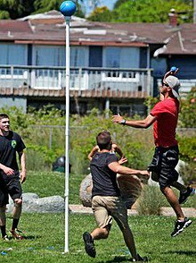

ANGELBALL

Angleball is the premier brand for North America's oldest sport, anejodi,[1] which was revived during World War 2 at Brown University by collegiate Hall of Fame football and basketball coach Charles "Rip" Engle (March 26, 1906 – March 7, 1983), to keep service men and women, students and athletes fit.[2] Angleball equipment is played for conditioning in the NFL, and by active groups worldwide - even inspiring a game-type in the world's best selling video game, Call of Duty, called Uplink. Angleball equipment is manufactured in the USA by Angleball USA & Worldwide which also organizes Angleball competition events.[3] International Angleball is in infancy and can be contacted through Angleball Worldwide for membership inquires and general questions - 8 countries are currently members.[4] Angleball is played by 500,000+ people in the United States as estimated by the group sizes of verifiable Angleball set users. The name "angleball" was chosen because it shares the first two letters as anejodi, honors the memory of Rip Engle, and the ball can be played all angles to the target..